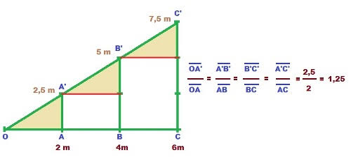

En el siglo VI a. C., Tales de Mileto revolucionó la geometría durante un viaje a Egipto. El faraón lo desafió a
medir la altura de la Gran Pirámide de Guiza, y Tales lo logró de forma brillante: esperó al momento del día en
que su propia sombra medía lo mismo que su estatura y concluyó que, en ese instante, la sombra de la pirámide
también era igual a su altura real, dando origen al concepto de proporciones.
formula:

Este teorema establece que si trazamos una línea paralela a cualquiera de los lados de un triángulo, obtenemos
un triángulo
más pequeño que guarda las mismas proporciones que el original.
A / a = B / b
Idea clave: Si la sombra de un palo de 1 metro mide 2 metros (el doble), la sombra de un edificio de 10 metros
medirá 20 metros (el doble). La proporción entre altura y sombra no cambia.
Para qué sirve: Para calcular alturas, distancias o dimensiones de cosas gigantescas o inalcanzables sin tener
que medirlas directamente.s
UN VIDEO PARA COMPLETAR EL TEMA Y TERMINAR DE ENTENDERLO
Apolla al creador de contenido que ralizo el video